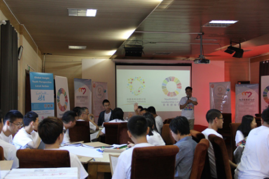
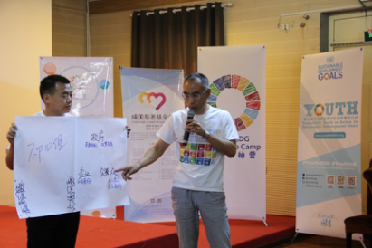
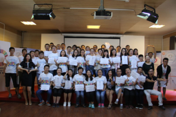

2016.11.23 20:50
As the first training camp deeply learning UN Sustainable Development Goals in the world, the Youth4SDG Leadership Camp was held in Beijing from August 26th to 28th 2016, gathering youth leaders and thinkers from China (including Hong Kong and Taiwan areas) and Malaysia. Not only does the Youth4SDG Leadership Camp lay emphasis on knowledge learning, but also on cultivating youths’ ability of participating in and launching activities to realize the UN Sustainable Development Goals, by which youths will turn their knowledge into real actions. This Youth4SDG Leadership Camp was held with ThinkBig Academy Beijing branch jointly. As an important sponsor and initiator, Liu Yingzi, Secretary general of Hainan Chengmei Charity Foundation, encouraged campers during the opening ceremony by saying that the goal of this camp is to provide Chinese youths with opportunities to learn about and participate in social innovation, and to provide young change makers with space and support. She wished that there would be more youths improving the community and doing their own part of job to promote sustainable development.
Ever since September in2015, people all over the world have been positively responding to and realizing the UN Sustainable Development Goals, when leaders from more than 150 countries passed the UN Sustainable Development Goals(Macro-Strategy Planning on 2016-2030 Global Development). As UN Secretary-General Ban Ki-moon said, youth group’s participation and action plays a significant role in realizing UN Sustainable Development Goals, coping with crisis and challenge the world is facing and building earth a beautiful homeland.
The First National Chinese Curriculum to Deeply Learning UN Sustainable Development Goals
The first national Chinese Curriculum was developed by the Youth Leader Campus of Youth4SDG to provide opportunities for young people to further study UN Sustainable Development Goals. The three-day Youth Leader Campus covers a series of curriculums including Ice-breaking Activities, Keynote Speech, Workshop, Youth Speech on Substantial Development and Youth4SDG Party, in which outstanding youth supervisors from UN organs, renowned international organizations, large enterprises and startup companies were invited.
Ms ZHOU Qinnan, the Cooperating Relationship Manager of the Climate Reality Project explained the grim situation of climate change and related solutions. She encouraged every young people to spread scientific knowledge and acting plan concerning climate change among the world as a climate leader. Mr. Katsuyoshi, the Youth Technical Consultant of UNFPA China Office showed to members how the disadvantaged groups were unequally treated and analyzed the cause of the inequality from the perspective of interested parties. Mr. LIU Hao, Auto-mortgage Operation Manager of Tesla (China) illustrated internet-thinking and marketing tool, displaying the promotion methods in the internet era from website, apps and development and maintenance of the WeChat public account. Ms. Nancy LOU, Senior Consultant of Mercer delivered a speech on the cultivation of leadership through characteristic analysis to help members build self-recognizing and discerning ability and create efficient teams. Ms. WU Kexin, Senior Investment Manager of Future Manufacture shared the project designing and business thinking through project practices to help members grasp the methods of analyzing the substantial development capacity of a project.
Ms. LI Chengcheng, General Manager of Beijing Xiudegu Sinology Education Base professed the substantial development of Sinology. At last, Mr. XIA Cunsong, Executive Director of Youth4SDG shared with members the challenge and opportunity of substantial development facing by the world including China.
The Secretary-General of Youthink Center, Wang Zekai, investigated participants on how to design their own UN Sustainable Development Goals, mobilized people to spread their programs and design concise and general program. In this way, campers improved their plans of action. Besides, Wang also introduced programs such as ThinkBIG Initiative and MY World 2030, to encourage them to participate in these programs to obtain more supports and make social influences.
Creativity Academy of ThinkBIG Initiative was held in Beijing Successfully
This time, the Youth4SDG Leadership Camp was held together with ThinkBIG Initiative, supported by Chengmei Charity Foundation. Youth creators around the world came here to share and promote their social initiatives intensively, covering the fields of pension, autism, poor alleviation and so on. These future young creators thought actively about how to fit their design into the accomplishment of UN Sustainable Development Goals.
During the process, 4 participants shared their ongoing or initiative programs. Lv Mengyu, from Nanchang, Jiangxi Province, shared with us her program called “Homosexual Space”. She hoped to devote herself to improving gender equality and gender identity. Wei Qian, from Chengdu Long Live Care Center, brought her thought of promoting family pension by housing transformation for elders. Liu Jiaying, from Heweilai Prefabricated Construction Co., Ltd, helped out left-behind children with the difficulty of accommodation at school in rural areas, through her program “The Flying Box” with prefabricated buildings. Liu Cheng, from Tangshan, shared his experience of helping people with autism, as well as the experience of initiating the program of self-designed Life Education to promote better development of teenagers.
ThinkBIG Initiatve, founded by Chengmei Charity Foundation and hosted by The Youthink Center, upholds the concept that human beings are the first investment. It gathers young ChangeMakers and provides angel investments for social initiatives founded by youths and social enterprises. The Youth4SDG Leadership Camp also attracted many young creators. They came from social organizations throughout China, covering fields of assistance to weak groups, education and environmental protection.
The Youth4SDG Leadership Camp is not only a study tour of UN Sustainable Development Goals, but also a change-making tour for youth creators and leaders. Therefore, Beijing is just a starting point. We will continue to develop the Youth4SDG Leadership Camp throughout China, encouraging more young people to acquire knowledge of sustainable development and initiate their own programs relating to it in the future.
Announcing First UN Young Leaders for the Sustainable Development Goals
On International Day, UN says youth can lead global drive for a more sustainable future
The First Training Camp Deeply Learning UN Sustainable Development Goals in the World was Held in Beijing Successfully
Youth4SDG Annual Meeting 2016 held in Shenzhen